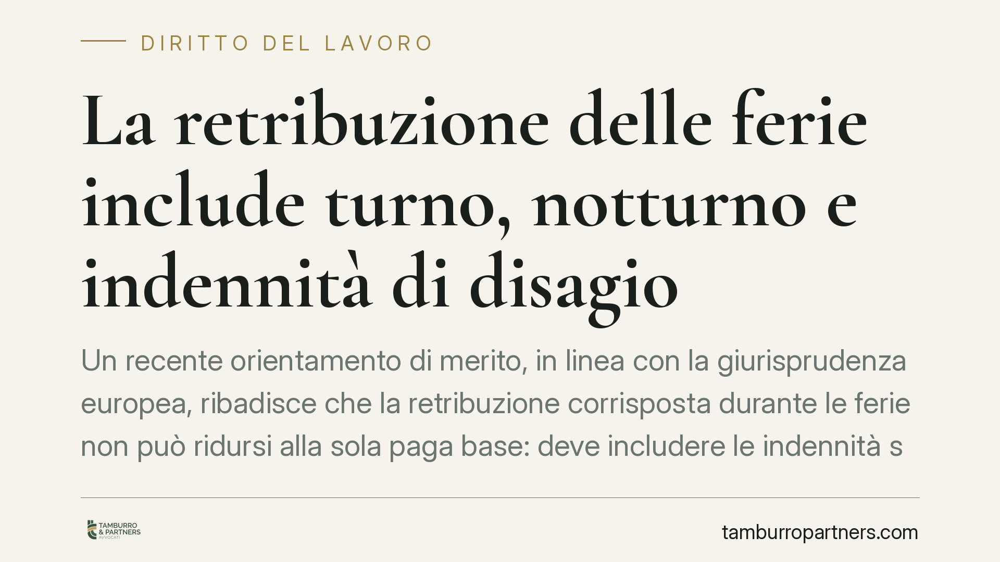

La retribuzione delle ferie include turno, notturno e indennità di disagio
Un recente orientamento di merito, in linea con la giurisprudenza europea, ribadisce che la retribuzione corrisposta durante le ferie non può ridursi alla sola paga base: deve includere le indennità stabilmente collegate alle mansioni, come turno, notturno e disagio. Il principio tutela l'effettività del diritto al riposo e incide direttamente sul calcolo della busta paga dei lavoratori turnisti.

Il principio
La questione è semplice nell'enunciato e complessa nell'applicazione: quanto deve guadagnare un lavoratore mentre è in ferie? La risposta non è "la paga base". Chi, durante l'anno, percepisce con regolarità indennità legate al modo in cui svolge il proprio lavoro — turni, lavoro notturno, condizioni disagevoli — non può vedersi ridurre il compenso nel periodo di riposo.
La ragione è intuitiva. Se andare in ferie comporta una perdita economica, il lavoratore è indirettamente spinto a non fruirne. Ma il riposo annuale non è una concessione: è un diritto irrinunciabile, funzionale alla salute del lavoratore. Decurtarne il valore significa svuotarlo.
Inquadramento normativo
Il fondamento è duplice. Sul piano interno, l'art. 36 della Costituzione riconosce il diritto alle ferie annuali retribuite e lo qualifica come irrinunciabile. Sul piano europeo, l'art. 7 della Direttiva 2003/88/CE sull'orario di lavoro impone agli Stati membri di garantire ferie annuali retribuite di almeno quattro settimane.
La Corte di Giustizia dell'Unione Europea ha chiarito la portata di questa "retribuzione" con una serie di pronunce. Nella sentenza C-155/10 (Williams) ha stabilito che il lavoratore, durante le ferie, deve percepire la retribuzione "ordinaria", comprensiva delle componenti intrinsecamente collegate all'esecuzione delle mansioni. Nella C-539/12 (Lock) ha incluso le provvigioni abitualmente percepite. Nella C-385/17 (Hein) ha precisato che non vanno computate le componenti occasionali o accessorie, ma vanno incluse quelle che presentano un carattere di stabilità.
Questa interpretazione della Direttiva è vincolante per il giudice nazionale, che deve applicare il diritto interno in modo conforme. Le pronunce dei tribunali di merito che vi si allineano, pur non costituendo precedente vincolante nel nostro ordinamento, si inseriscono in un filone europeo ormai consolidato e ne costituiscono attuazione.
I tre requisiti
Non ogni voce della busta paga confluisce automaticamente nella retribuzione feriale. Perché un'indennità vada inclusa devono ricorrere tre requisiti:
- Connessione – l'indennità deve essere collegata alle mansioni svolte o allo status professionale del lavoratore (il turnista percepisce l'indennità di turno proprio perché lavora a turni).
- Continuità – deve essere erogata con regolarità, non in via sporadica od occasionale.
- Consistenza – deve avere un importo non trascurabile, tale da incidere concretamente sul tenore economico complessivo.
Ricorrendo queste condizioni, l'omessa inclusione configura un inadempimento retributivo del datore di lavoro.
Implicazioni pratiche
Per il lavoratore turnista l'effetto è diretto sul cedolino: la retribuzione dei giorni di ferie va riparametrata includendo la media delle indennità stabili percepite. Eventuali differenze non corrisposte costituiscono crediti retributivi, soggetti all'ordinaria prescrizione quinquennale prevista dall'art. 2948, n. 4, c.c., con decorrenza da verificare caso per caso.
Per il datore di lavoro il tema è di compliance e di rischio contenzioso. Liquidare le ferie sulla sola paga base, quando il dipendente percepisce stabilmente indennità di turno o notturno, espone a richieste di differenze retributive potenzialmente estese nel tempo e, se la prassi è adottata su larga scala, a un contenzioso seriale.
Cosa fare in concreto
Per i lavoratori:
- Verificate in busta paga come viene calcolata la retribuzione dei giorni di ferie e confrontatela con quella dei giorni ordinari.
- Raccogliete i cedolini degli ultimi anni per documentare la continuità delle indennità percepite.
Per i datori di lavoro:
- Riesaminate le voci retributive che compongono il cedolino dei dipendenti turnisti e verificatene il trattamento in sede di ferie.
- Adeguate gli algoritmi di calcolo del gestionale paghe includendo le indennità che soddisfano i tre requisiti.
- Quantificate l'eventuale esposizione pregressa, tenendo conto del termine prescrizionale applicabile.
In entrambi i casi è opportuno valutare la singola fattispecie, poiché la qualificazione di un'indennità come stabile o occasionale dipende dalle previsioni del contratto collettivo applicato e dalla concreta prassi aziendale.
---
Contributo informativo a cura di Tamburro & Partners Avvocati - Avv. Giuseppe Tamburro. Non costituisce parere legale.
Ogni storia di lavoro ha i suoi tempi.
Se gestisci HR e vuoi un confronto su contenzioso, ispezioni o licenziamenti, scrivi allo studio. Ti rispondiamo entro un giorno lavorativo.